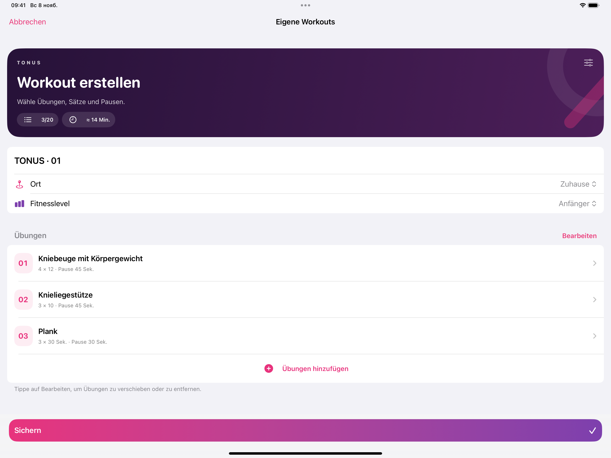

Von Nikita Revin, Entwickler von Tonus · 13. November 2026 · Tonus 1.7
Wenn Sie dieselben Übungen öfter machen, können Sie sie als eigenes Workout speichern. Vor der nächsten Einheit öffnen Sie die Vorlage und ändern bei Bedarf einen Satz oder eine Pause. Oben im Editor sehen Sie, wie sich dadurch die geschätzte Dauer verändert.
Übungen auswählen und anordnen
Öffnen Sie „Eigene Workouts“ über „Start“ oder „Katalog“ und tippen Sie auf „Workout erstellen“. Geben Sie der Einheit einen Namen. Unter „Übungen hinzufügen“ wählen Sie bis zu 20 Übungen aus. Mit „Bearbeiten“ können Sie die Reihenfolge ändern oder einzelne Übungen entfernen.
Sätze, Zeit und Pausen einstellen
Tippen Sie auf eine Übung in der Liste. Dort stellen Sie die Anzahl der Sätze ein und wählen, ob pro Satz Wiederholungen oder Sekunden angezeigt werden. Die Pause legen Sie für jede Übung separat fest. In der Beispielvorlage zählen Kniebeugen und Knieliegestütze Wiederholungen. Beim Plank läuft die eingestellte Zeit.
In der Testvorlage steigt die Schätzung von etwa zwölf auf etwa vierzehn Minuten, wenn bei der Kniebeuge ein Satz dazukommt. Tonus berücksichtigt die geplanten Sätze und Pausen. Bei Wiederholungen rechnet die App mit einer angenommenen Dauer. Ihr tatsächliches Tempo kann davon abweichen.

Vorlage sichern und später ändern
Tippen Sie auf „Sichern“. Die Vorlage erscheint unter „Eigene Workouts“. Tippen Sie auf ihren Namen, um sie zu öffnen und zu starten. Wenn Sie später eine Einstellung ändern möchten, halten Sie den Namen in der Liste gedrückt und wählen Sie „Bearbeiten“. Bereits abgeschlossene Einheiten bleiben im Verlauf, auch wenn Sie die Vorlage löschen.
Pläne und schriftliche Übungshinweise stehen offline zur Verfügung. Online-Videos benötigen eine Internetverbindung. Externe Videodienste können Werbung anzeigen.
Tonus im App Store ansehen